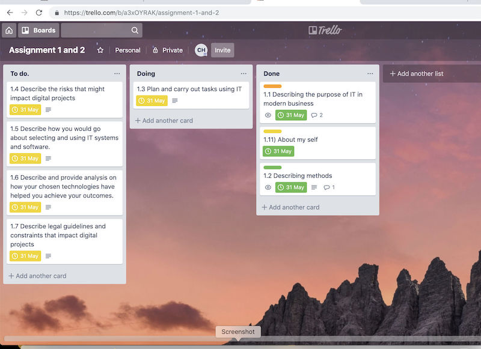

I.T has many uses in every aspect of a modern business. The biggest role information technology has in business is communication. From Email, video calls and smartphones allowing smooth, effortless and global communication inside company’s all over the world. Communicating out towards customers is also done via technology through things such as targeted adverts, company websites and social media. Networking opportunities can also be done globally with easy via technology. Data management is also driven by I.T through being able to track data effectively. MIS (Management Information Systems) can track sales data, expenses and productivity levels which empowers management to make informed decisions to improve the company. Another big role that I.T plays in modern business is inventory management systems. These systems can track stock accurately in order to insure how much stock they need to bring in and what is selling and what is not which again helps decision making. [1]
One of the most important thing when it comes to making a successful digital project is planning. Having a vision for the project by having objectives and understanding the scope of the project are very important. Understanding how much resources you are going to need how much money you have to spend etc is also very important and it's the first step you take. Communicating the team and having clear leadership is important for taking the project in the right direction. Drawing up a risk assessment is vital in ensuring that you foreseeing pitfalls and creating backup plans. [2]
I’m using Trello to organize this this project. I find that it helps to organize my work by cutting it up into chunks so I can take small breaks and to help me know what tasks I have done what tasks I’m doing. The features I tried to use the most is the deadline. This helps me keep working and pushing myself to do my work. If I was working in a team I could add more people to my boards and arrange who will do what stickys and see what work my work mates have done. I can access this on any computer with the internet meaning I can work on this at home with easy if I fall behind. [3]
Describe the risks that might impact digital projects. The first thing that could disrupt the project is money. If you are getting funed by a borad of investors it's important to keep the interested and involved in order to keep the money coming in. If you are funding the project yourself it would be important to keep yourself committed to the work. Another problem is inexperience and not being able to achieve goals in time because they are learning skills as they going along can cause problems. A lack of resources could mean that a project ends up not living up to the scope or expectations set out to achieve at the beginning. If the project lacks a direction and it's not clear to the team it could lead to mistakes that hurt the project. The design of the project can also be problematic if its not flexible meaning it can change as you go or your design is not possible could lead to delays in the project. [4]
When investing in technology it's important to make sure that it's going to be used a lot. If you don’t need it and your not going to use it that much then it's not a good investment. It's important to also ask you team about what they need and what is taking up a lot of time (time is money). If maintaining a server is getting expensive and it is taking time, outsourcing it to another company so you can spend more time on your project could be a great idea. Your IT project will have needs depending on what you are making. If your making a project in a small team there is free technology out there like slack and Trello that can help your team. [5] [6]
Trello is a website that allows me to manage my workflow using the Kanban principles. It splits my work up into manageable chunks and turns it into a visual experience. I can see what tasks I have done what needs doing and what I’m currently working on. I currently really like working on Trello there is a lot of alternatives that do the same thing like Proofhub and workzone. But I’m more comfortable with trello and I already have an account with them so its just a lot easier to use it.
Git-Hub is a social networking, code sharing and publishing website. I have my project saved on Git-Hub because so I can pull the code from any computer that has git bash meaning I can update if from anywhere. I can also use it to publish my web page so people can find it. Alternatives could be just saving the file on google drive and just sending it over but you cannot update your code like you can on Git-Hub.
Visual Code Studio is a program that allows you to code in different languages. In this project I’m using it to create my website via html. Visual code studio is great because it help me organize the work. The program changes the colour of certain bits of code to tell me what is what and also changes that colour to red when there is something wrong insuring that I find mistakes in my work. There is some alternatives like just writing the code in notepad but I like the dark background on visual code studio I think it's better for my eyes. [7]
GDPR is an EU wide law. It stands for General Data Protection Regulation. One of the main things that this does is to give people using the internet more control on what data companies and collect about them. Now websites have to ask if people want tracking cookies and companies must make information it has collected available to the user. The user may also ask there data to wiped and the company should comply. This means in digital projects companies have to now design systems that allow users access to these rights. Another change is that companies must only collect data that is necessary minimizing the data they can collect. If companies collect way more data then they need the EU can take action using sanctions costing the company money (EUR 20M) . This could also affect how the public sees that company. The biggest impacts are on digital service providers like Spotify that collect a lot of user data. [8]
Chrome DevTool is built in to chrome. Right click on this page and select inspect in chrome it should open it up. Chrome DevTool is used to look at the code and make changes to it. The effect is only temporary if you refresh the page the changes will be gone. I use this tool to experiment with padding and the visual aspects of the project. This is because it much quicker than just making changes then refreshing when I’m happy with my changes I have made I would copy the code and put it back in to my css making the change permanent. I really like using this tool its makes getting details right really easy. The downside is that it takes up a bit of the page meaning that when you close it down it the pages stretches back. Therefore i had to make some changes through visual code studio to make some more changes then just refreshed the page. Visual Code Studio is the tool im using to code this site. I have found it very easy to use I like the dark background and the way that it highlights different bits of code. One of the best features that I have used a lot is getting it to open 1 tab as my HTML file and then to open up the CSS file in another. This means I don’t have to back and forth I can just look and make changes to both at the same time. Trello I have used Trello to make copies of the text that I have used. It good to make notes on as well I have not used it much as I should have because I have been putting the website together more organically. I have just been testing and playing about with stuff till I have got it together without using trello to structure it. I used it when I've been in the middle of a task like selecting the colours to make a not such as “Padding” or going through the titles again. This means that I know what other things I must do when I look at my trello helping me keep track of my work a bit more.
Trello has definitely been worth using to cut up work and organize it. It has not been vital to the project in terms of planning, but it's been useful and I would use it again in order to do this task because its great and showing what work I need to do looking back at work that has been down and planning and adding bits of work I thought of on the go. Visual Code Studio has been vital to the project it's been very good when it comes to making the webpage and its go good at moving in between the different HTML files and CSS. I think that I could have not codeded this website as well without using it. There is some alternatives out there but I’m very comfortable with this program and its very good and making web pages. I could maybe look for some other programs that specialise in making web pages. Websites like Wix can be used to make very fancy looking websites without the need of knowing how to code. Chrome DevTool has been helpful but I could easily do this project without it. I have only used it for one or 2 things for styling the web page instantly so I can see the change quickly. Over all its useful enough and free so why not use it.
It looks very good on the front end it had a clear style very consistent, everything works links link and you move to each page quickly without any problems. The nav bar is a flex bot and can work on multiple different screens with easy. All the text go well together and looks good. Looks nice works well clear and easy to use. The back to top helps with navigating the page making it easier to get to the nav bar. The image at the top does a great job at sprerating the text and the nav bar it also makes the pages seem more connected adding to the consistent feelling of the website. The references are links represented as numbers on the website saving space and making the site look very neat. Its simple but it could be more complicated if I had more time I could have played about making different styles. Code could have been a lot cleaner there is to many tags and not enough classes Navigating the page could have been easier. There feeling of emptiness at the bottom of the page maybe another image it lacks something. On FireFox sometimes the links are not yellow like I said in CSS.
I could have added a background image which would have made it look a lot more complicated and showed off my skills more. I could have also linked my content table to the location on the website which would make moving about the website much easier. If I was to start this project again I think I would have started with some planning for my coding so it is easier to read, change and find things. I could have tested it FireFox more often in order to get used to looking at my webpage in the different browser. I could also add another image at the bottom in order to make it look a bit more full. The fire fox and chrome images would look better if they were next to each other. I think I could make the webpage even better if I had more to put along the task bar maybe making as better profile of myself and making a about tab would make it look better. The bottom of assignment 2 needs to be spaced out better with padding.
I think that my outcome is fit for what it needs to do which is to show off the skills that I have gained. The functions such as being about to which pages. The minimalist design does not take away from the text which is important in a blog. There is a back to top button which makes navigating the page a lot easier which is important because the page has a lot of text. The text is clear and easy to read without any distractions. The images files were changed from PNGs to JPG because they are more appropriate in terms of displaying images. I have cleaned up all the error messages I had and all the links work now. I have also changed and cleaned up the back to top links so they link to the page instead of just going to the tag at the top of the page. I used the chrome devTool in order to play about and make the padding look better. Overall it completes its mission which is to be a blog to show information.
Trello was great at keeping me efficient and productive by cutting the work up into chunks that get completed. The problem with it is that dragging stuff into boxes could get annoying and sometimes I was just working and not updating after each task meaning I would get lost and have to figure out where I was at. I would have been a more usual tool if I was working in a team. Visual Code studio was great at helping me make my work and highlighting problems and auto completing bits of code made things a lot quicker meaning I could do more work. It would have been better if I planned my code out in advance by setting up what classes I will need in CSS. If we was to do this in teams would need to plan out the code in advance then we would work on different HTMLs then bring it together or work of different parts on the same HTML and use Git-Hub to connect the work together quickly. I would test this by taking on a bigger project maybe in a group and seeing if we could do more work together then we did by ourselves. If we should know if it works if we manage to to do the work in the same about of time.